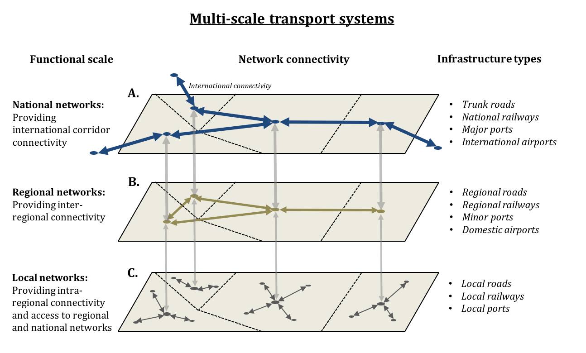
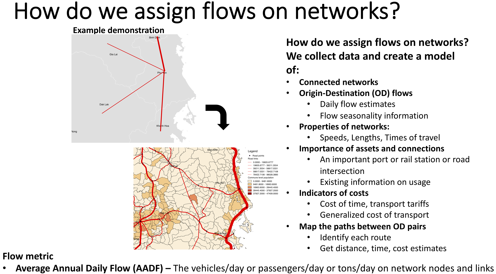
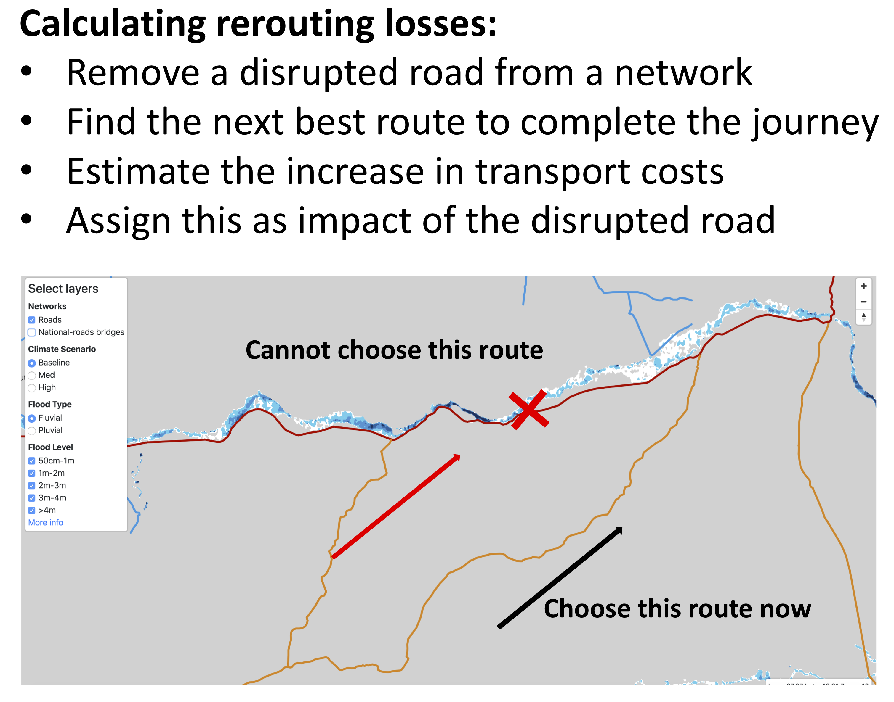
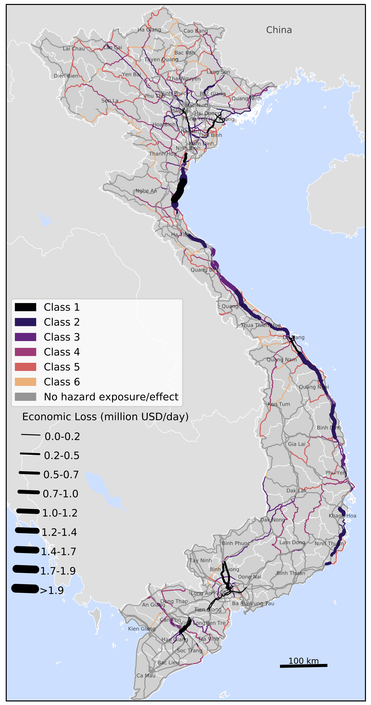
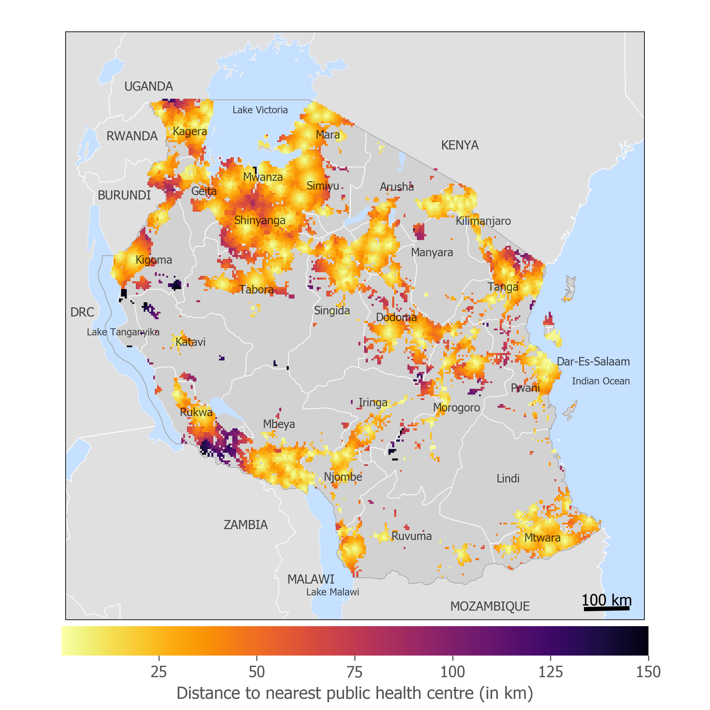

This mini-lecture will cover the general principles of transport network flow modelling, to analyse how services are delivered. We will also look at the process of modelling flow disruptions due to external shocks, such as climatic hazards. We will cover the fundamentals of spatial mapping and flow simulation modelling of transport systems, as well as understand what kinds of disruption metrics can be created from such models.
When we think of transport networks, we refer to roads, railways, waterways (inland and maritime) and airline networks. Each of these networks is also referred to as a transport mode, and the overall transport ‘system-of-system’ is the collection of all modes, called a multi-modal network. While there are several complex components (assets) that make up each transport mode, in the broadest sense we analyse these networks as collections of nodes (points) and links (lines), as explained in mini-lecture 9.1.
The critical components for each transport mode include:
Roads: Junctions (points), bridges (points or lines), road section links connecting junctions (lines)
Railways: Stations and junctions (points), track section links connecting points (lines)
Waterways: Ports (points) and water courses and shipping channels connecting ports (lines)
Airlines: Airports (points) and airline routes between airports (lines).
The key service provided by transport networks is the mobility of goods, services and people. Unlike other utility networks of energy and water, transport networks do not generate a resource, but their role is to provide connectivity for easier mobility.
Figure 9.2.1 shows how multi-modal transport systems exist as multi-scale networks in terms of the connectivity they provide at different spatial scales – international (top) to local (bottom). Several point locations in the multi-modal networks connect different layers and modes – for example, an airport provides international and domestic mobility between regions and is also connected to the road and railway networks.

Figure 9.2.1: Multi-scale representations of transport networks
Flow modelling of transport networks means defining and solving a traffic assignment problem, whose goal is to represent the movement of vehicles (with people and goods) over space and time while considering the capacities (maximum allowable vehicles over space and times) of the underlying transport network being used. A detailed traffic assignment problem has several complex model assumptions and parameters, which are beyond the scope of this mini-lecture. The reader can learn about some of these details in Patriksson (2015) and Jiang et al. (2019).
There are some generalisable principles that apply to any traffic assignment problem. These are described in Figure 9.2.2, where the process of assigning transport flows (vehicles/day or passengers/day or freight tonnes/day) is broadly accomplished through the following data and steps:
We need a network that properly shows nodes and connecting links in the direction of travel. A good example is the road network of Great Britain.
We need information on link speeds and transport costs. Travel cost information could be in terms of vehicle operating costs (Archondo-Callao and Faiz 1994) and tariff costs associated with transporting commodities (Baier and Bergstrand 2001).
We need information on travel patterns along routes. The most common method is to create origin-destination (OD) matrices that show how many vehicles/people/goods move between regions or specific locations within a country (Bera and Rao 2011).
From an OD matrix, we identify specific nodes (airports, ports, railway stations, road junctions) on the transport networks between which we need to send traffic – vehicles/people/commodities.
The most common process of assigning (sending) traffic is the shortest path algorithm that determines a route that has the least-cost route of travel (Dijkstra and others 1959).

Figure 9.2.2: Illustrative process and steps for building a transport flow assignment model. Applied in a transport risks analysis study in Viet Nam (Oh et al. 2019)
Following the modelling of transport flows, the flow disruption problem involves disrupting the transport network’s ability to provide mobility and seeing how the patterns of mobility are affected in a depleted network. The different steps in a disruption model are outlined below and demonstrated with an example in Figure 9.2.3.
Choosing network nodes and links that are affected by some external shock event – for example, identifying roads that are flooded or ports that face a man-made attack.
Understanding how the chosen nodes and links cannot still function as before – they might be completely damaged or shut down, or they might be able to operate at reduced speeds and/or capacities.
Recalibrating the transport network depending upon the effects on disrupted nodes and links – if nodes and links are considered completely damaged or shut down then they can be removed from the network, or if they still provide reduced mobility then the speeds, costs, capacities assigned to them are changed.
Recalculating all OD flows along the disrupted network sections and seeing how flows are redistributed (rerouted) along new routes that can provide the next-best least cost route (after the original route is disrupted). The flow rerouting algorithm is the same as the one explained in the previous section.
Estimating disruption losses in terms of:
Increases in transport costs (or journey distances, times) when traffic is rerouted
Volumes of traffic (vehicles/people/freight) that cannot be rerouted because there is no other alternative route if the existing one is damaged or shut down.

Figure 9.2.3: Representation of the steps and example of transport flow disruption modelling for a road network that is flooded
Transport disruption analysis is a very useful tool for identifying the criticality of nodes and links in the transport network. We introduced the concept of network criticality in mini-lecture 8.4, and here we provide a more complete understanding of criticality assessment for transport networks.
Criticality is defined as a measure of the of transport asset’s (node or link) importance and disruptive impact on the rest of the transport infrastructure. Some transport criticality measures include:
Vehicles disrupted
Freight disrupted
Freight redistribution losses – increase in transport costs due to rerouting
Economic flow losses – macroeconomic supply chain losses due to flow isolation
Affected population with no or limited transport access.
Criticality is assigned to the individual asset that is disrupted. For example, a port might be disrupted, and we estimate some (or all) of the above metrics and assign the values to the port. Figure 9.2.4 shows a criticality map of economic losses per day associated with freight redistribution losses and economic flow losses as a consequence of roads affected by natural hazards (flooding, landslides, cyclones) in Viet Nam (Oh et al. 2019).

Figure 9.2.4: Road network criticality map showing economic losses in US$ per day associated with roads disrupted by natural hazards in Viet Nam (Oh et al. 2019)
Transport networks are extremely significant in improving people’s access to locations of importance in countries, which is critical for socio-economic progress. For example, the ease with which people can travel to health centres is crucial during emergencies; connectivity to important markets and places of work helps people improve their economic prosperity.
Transport accessibility analysis helps us understand how easy (or difficult) it is for people to travel to their nearest important locations (e.g. health centre, job market). The metric of measuring ease of access could be in terms of travel distances or time or costs associated with population concentrations using a particular transport network. Such analysis is particularly important in developing countries, where large parts of the population might not have access to services within a small distance from their houses.
Figure 9.2.5 shows an accessibility analysis result for Tanzania (Pant et al. 2018), where the colours assigned to locations of population concentrations (extracted from Worldpop (Tatem 2017)) show how far they are from their nearest health centres (data extracted from this source (Ouma, Okiro, and Snow 2018)), when travelling via the road network for the country (mapped via OpenStreetMap).

Figure 9.2.5: Accessibility mapping analysis in Tanzania showing locations of populations with their distances to nearest health centres via the road network in the country. The darkest colours show the population concentrations that have the poorest connectivity to health centres, making them the most vulnerable during disasters (Pant et al. 2018)
This mini-lecture introduced multi-modal transport systems and how these networks are modelled. We discussed how transport systems are spatially represented and what the critical components of these systems are. We explained how to model flows on transport networks using a general set of datatypes and modelling principles. We then showed how transport disruption analysis is done, and what kinds of disruption metrics are produced from such analyses. We showcased the value of the analysis through a criticality map showing the disruptive impacts assigned to roads in Viet Nam. Finally, we also showed how transport accessibility analysis is another useful way of understanding the socio-economic importance of transport networks.
The concepts presented in this mini-lecture are applicable to transport network analysis at multiple scales (local, national, global). They provide valuable tools for measuring transport vulnerabilities and risks, and also help identify critical network locations (nodes and links) which could be targeted for resilience planning.